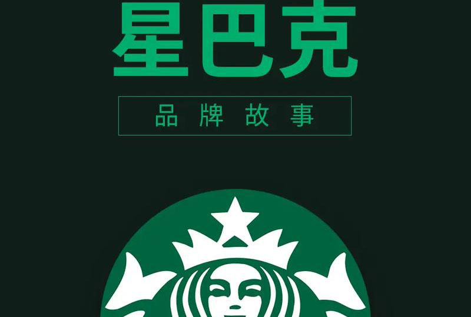
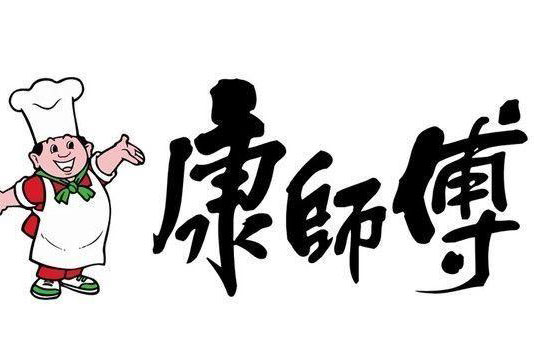
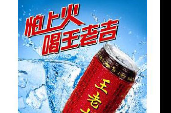

星巴克
星巴克咖啡。星巴克来自于美国华盛顿州西雅图市，在1971年诞生，最初是经营咖啡豆业务，真正的崛起却是在1982年霍华德·舒尔茨加入星巴克之后经营出来的。霍华德·舒尔茨也是犹太人家庭出身，不过幼年时期家庭并不富，他的经历再一次体现了犹太人的拼搏精神与智慧。 星巴克的LOGO中间有一个长发双鱼尾的女性头像——塞壬海妖（Siren），这个角色来源于希腊神话，用甜美的歌声引诱船员们失神，然后导致过往船只触礁沉没，代表着非同一般的吸引力，这一点也是品牌的主要诉求，想通过这个特点来展示星巴克咖啡的吸引力。

康师傅
康师傅" 的老板并不姓 "康"，而是台商顶新集团董事魏应交及其兄弟。"康师傅"是1992年顶新为进军大陆而设的品牌。“康”代表健康，念起来很响亮;“师傅”是大陆最普遍的尊称，既是专业、好手艺的代名词，同时又显得非常亲切。再配上笑容可掬、造型憨厚的“胖厨师”形象，是一个很具号召力的品牌。于是，顶新集团便锁定“康师傅”为产品名称。

王老吉
王老吉凉茶是中国著名凉茶，于清朝道光年间(约1830年)由广东鹤山人王泽邦(乳名阿吉)所创。王泽邦本务农为生，当时地方瘟疫流行，他偕同妻儿上山避疫，途中巧遇一道士传授药方，王泽邦依照药方煮茶，帮助百姓治病。清文宗咸丰二年(1851年)，王泽邦被册封为太医令，翌年在广州市十三行路靖远街开设了“王老吉凉茶铺”，专营水碗凉茶。1949年解放后，成立王老吉联合制药厂，2004年3月4日更名为广州王老吉药业股份有限公司。